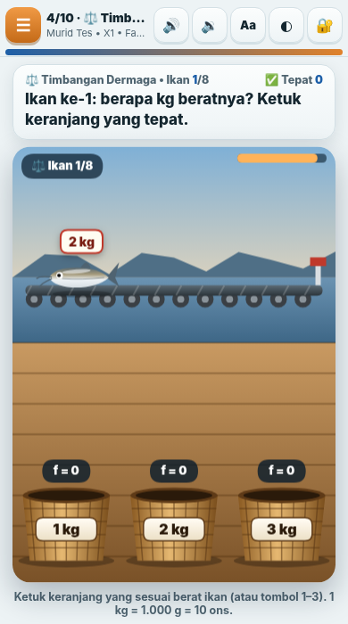
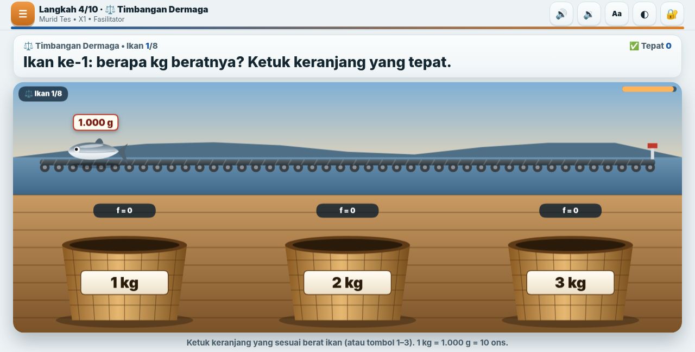
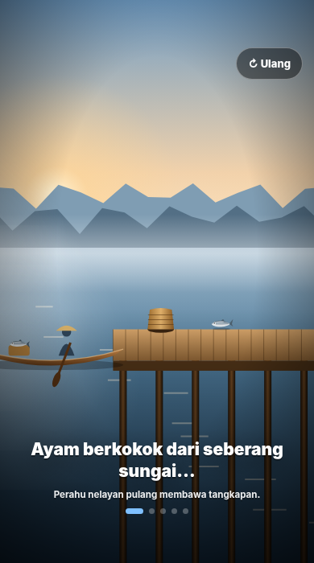
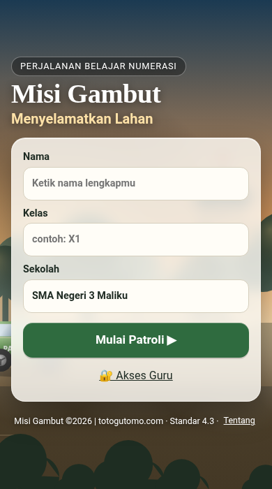
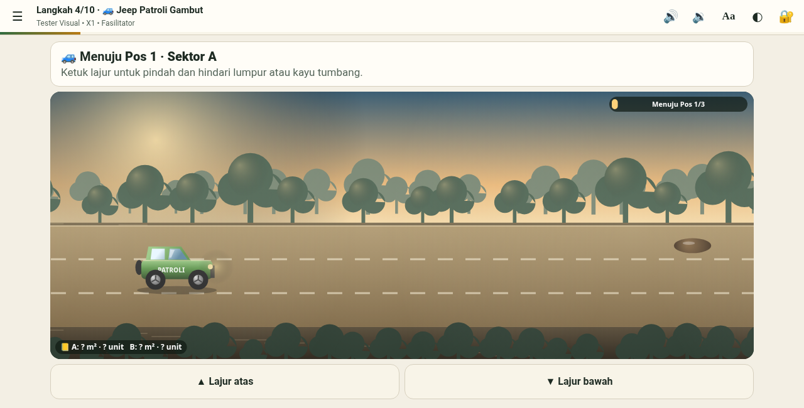
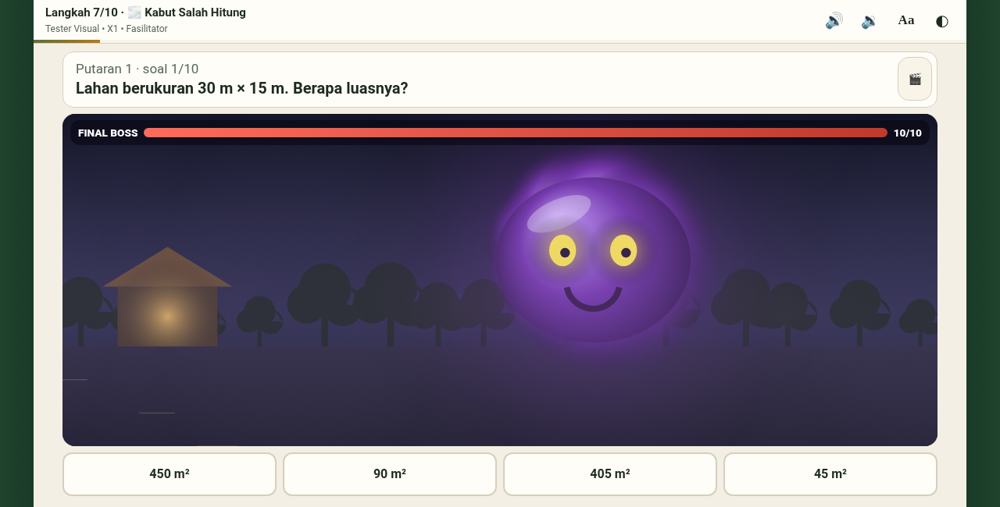
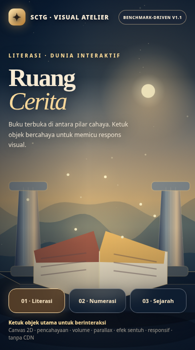
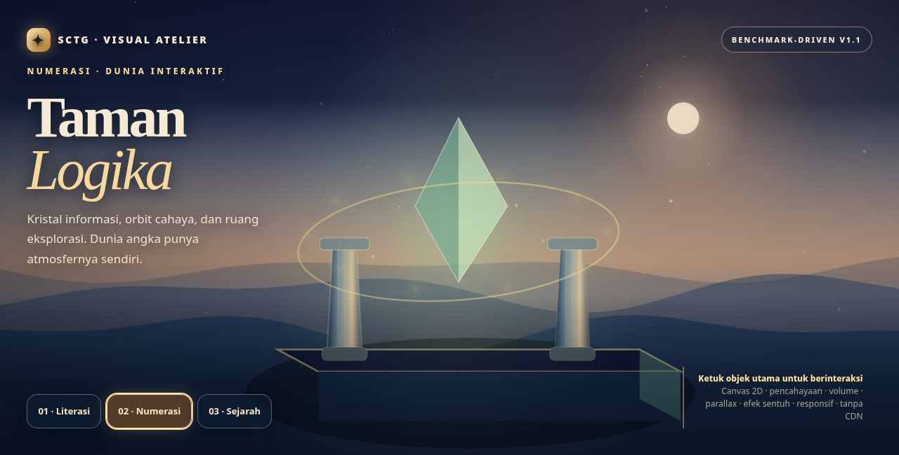
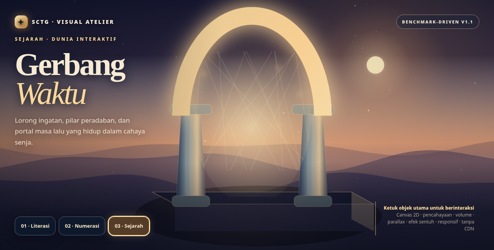
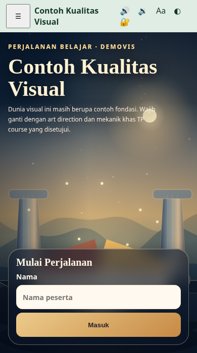

Galeri Banding Visual SCTG
Galeri ini memperlihatkan screenshot yang benar-benar ditangkap dari browser. Dua course Claude merupakan benchmark berbeda dan read-only; hasil Factory Visual Atelier adalah demonstrasi teknologi baru, belum course lengkap atau bukti skor 9,9/10. Jangan menyamakan gambar cantik dengan gameplay yang sudah lolos uji.
01 — Referensi Claude NUM09

Game pada HP.

Mode Panggung / IFP.

Komposisi sinematik.
02 — Referensi Claude NUM10, Misi Gambut

Cover HP: hierarki teks dan ilustrasi bergerak.

Jeep, lintasan, elemen perspektif dan tiga pita game.

Final Boss dengan karakter dan konsekuensi. Game/Boss/Ruang Baca diambil memakai state pratinjau Fasil, bukan sertifikasi jalur siswa.
03 — Output Visual Atelier dari Factory V1.1

Contoh Literasi pada HP. Buka demo interaktif

Contoh Numerasi: kristal/orbit.

Contoh Sejarah: portal waktu.

Cover starter baru: visual engine benar-benar ditanam otomatis saat build, bukan referensi dokumen.